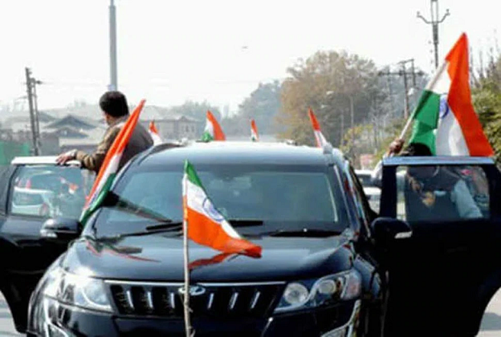
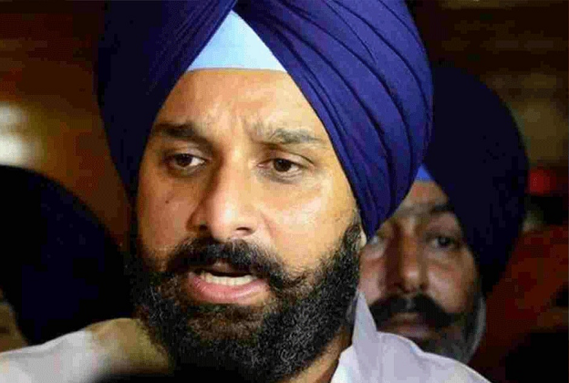
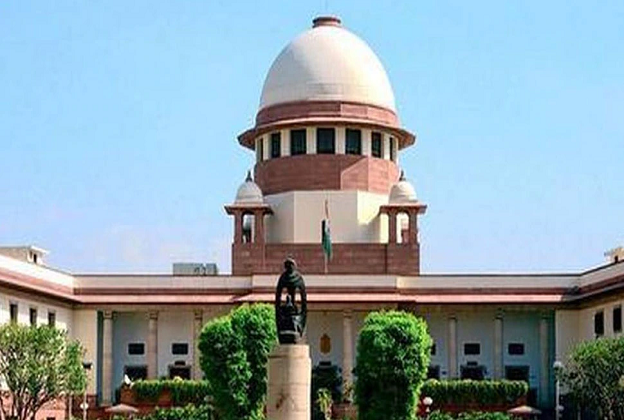
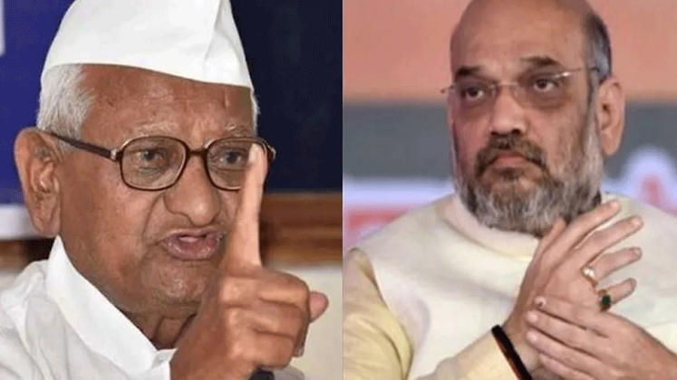
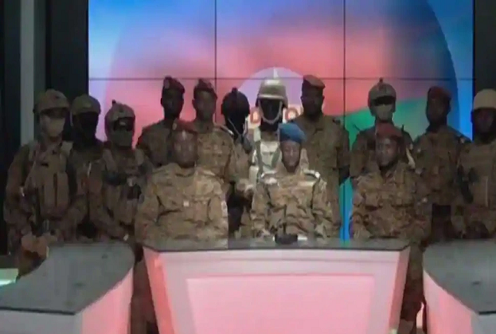
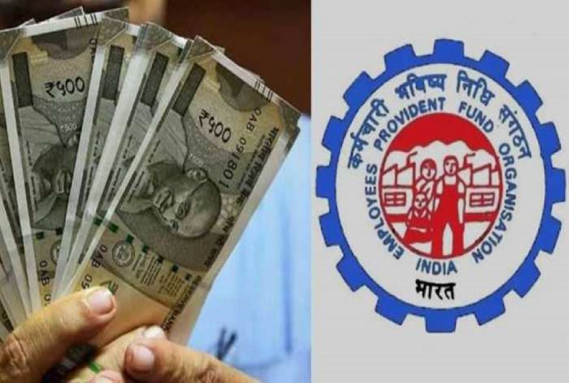
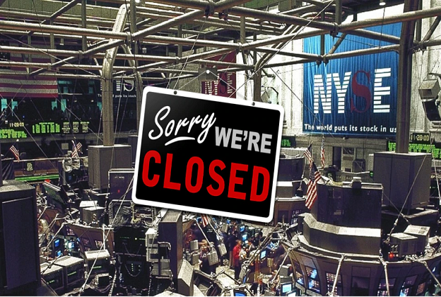
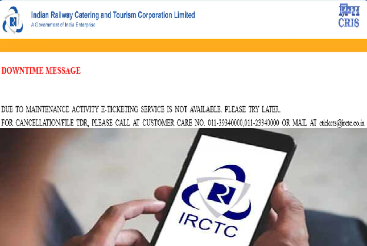

CURRENT-AFFAIRS JAN 25, 2022
india
1. Be careful before putting the tricolor on the car! Know what the rules say
Preparations are going on in full swing for Republic Day. People are buying tricolor flag to show patriotism. Do you know that people can hoist the flag on the houses, but only some special people have the right to put it on the vehicles. Despite this, if you do so, then you may have to face strict action.
New Delhi: As soon as the national festival approaches, the feeling of patriotism starts rising in the minds of the people. Especially on Republic Day and Independence Day, people are seen putting the tricolor flag on homes, cars, bikes etc. Some paint the tricolor flag on the body, while some express the feeling of patriotism by putting a badge on the chest. Republic Day is about to come again. In such a situation, many people would have bought to put the tricolor flag on their vehicles, but be careful before doing so. You can be punished for doing this, let us know what the rules say.
Some special people can put the flag
Before the Republic Day, tricolor flags are seen being sold in the market. Many people also buy them to put a flag on the vehicles, but doing so can lead to punishment. According to the Indian Flag Code, only certain people have been given the right to put the flag on the vehicles, apart from these, if any person puts a flag on the vehicle, then action can be taken against him.
2. Now the sub-variant of Omicron has increased tension, also beats the test; Know what are the symptoms?
The fight is still going on with the Omicron variant of Corona that the sub-variant of Omicron has also come to the fore. The most worrying thing is that this sub-variant named Stealth Omicron is not even catching the RT-PCR test.
New Delhi: A sub-variant of the new variant of Coronavirus, Omicron, has also been revealed, which has been named Stealth Omicron (BA.2). After Denmark, UK, Sweden and Singapore, all these variants have now entered India as well. The BA.2 strain spreads several times faster than Omicron's original variant. This is the reason that along with the people, the concern of the government has also increased.
Scientists are worried because of this
Omicron was until now believed to be many times more infectious than the delta variants. Although its symptoms are less severe than those of the Delta, its sub-variant Stealth Omicron has become a cause for concern. It is being told that Stealth Omicron is not even catching the RT-PCR test. This is the reason why the concern of scientists about this sub-variant has increased. Let us tell you that before this all the variants were easily available in the grip of RT-PCR test.
3. Punjab: Bikram Majithia missing after bail was rejected in drugs case, police started raids
Akali Dal leader Bikram Majithia has been missing since the bail was rejected in the drugs case. Mohali Police is continuously raiding his residence, however, nothing has been found about him so far.
Chandigarh: The difficulties of Akali leader Bikram Majithia have increased. Police raided Brickam's house in drug case. The police are continuously raiding many places for his arrest. Let us tell you that on December 20 last year, a case was registered against Bikram Majithia in Mohali under the NDPS Act. He had approached the High Court after the anticipatory bail plea was rejected in the Mohali Court.
Majithia's claim - Case registered due to political rivalry
Majithia claims that this case has been registered against him in a political rivalry. He was given relief from arrest for some time by the High Court, but after the anticipatory bail was rejected in the High Court yesterday, he is left with the option of going to the Supreme Court or he can even surrender in the court.
4. The matter of taking action on the free election promises, SC seeks response from Center and EC
Free scheme promises in Elections: In the petition filed in the Supreme Court, the government and the Election Commission (EC) were made parties. It was said in the petition that free scheme promises of political parties are like wooing voters. The recognition of the parties doing so should be cancelled.
New Delhi: A hearing was held in the Supreme Court (SC) today on the issue of distributing free gifts to woo voters before the elections or canceling the recognition of political parties promising free schemes.
Supreme Court issued notice
Hearing this petition, the court has issued a notice to the Central Government and the Election Commission (EC). In the application, the petitioner had said that the case of political parties promising or giving gifts to voters before elections out of government funds affects free and fair elections.
5. Anna Hazare wrote a letter to Amit Shah - a scam of 25 thousand crore rupees in the sale of sugar mill!
Anna Hazare has written a letter to Home Minister Amit Shah. He has claimed that there has been a scam of 25 thousand crores during the sale of sugar mills in Maharashtra. After this claim, he is protesting and has demanded an investigation.
Mumbai: Social activist Anna Hazare has accused Maharashtra's cooperative sugar mills of selling them at throwaway prices. In this context, he has written a letter to Home Minister Amit Shah. In this, he has talked about the scam of 25 thousand crores and has demanded to get it investigated by a retired Supreme Court Justice. Hazare has requested that a high-powered committee be constituted under the chairmanship of a retired Supreme Court judge to probe the scam.
Anna Hazare said - we are protesting
In the letter, Anna Hazare wrote, "Since 2009, we are protesting against the sale of sugar mills at throwaway prices and irregularities in cooperative financial institutions." Let us inform that Anna Hazare has already lodged a complaint in this matter.
Complaint was lodged with Mumbai Police in 2017
According to the report of Time of India, Hazare said, 'Since 2009, we have been protesting against the sale of sugar mills at throwaway prices and irregularities in cooperative financial institutions. In the year 2017, we had filed a complaint against it in Mumbai. After this a DIG level officer was appointed to investigate the complaint.
World
1. US President did not like the question on inflation, abused the journalist
US President Joe Biden lost his cool on the question of a journalist. He abused the journalist on the mic. The journalist had asked a question on the rising inflation, which the President did not like and abused him in his tongue.
Washington: It is natural for politicians to be uncomfortable with the sharp questions of journalists, but US President Joe Biden got so angry on a question related to inflation that he abused the journalist. A video of Biden has surfaced in which he is purportedly using abusive language for a Fox News journalist. Criticism of the US President has started after the video went viral.
mood swings from these questions
According to the news published in our affiliate website WION, journalist Peter Doocy questioned Joe Biden on inflation. After answering this question, Biden called the journalist stupid on the mic in a muffled voice and further Son of a B***h. Actually, Biden was talking with his advisors on the economy. During this, the journalist asked, will you answer questions related to inflation? Do you think inflation will be a political responsibility after the mid-term elections?
2. Burkina Faso: The army told the President incompetent, came on TV and said - 'Now we occupy the country'
Questioning the functioning of the President, the army of Burkina Faso has captured the country. Army officers came on state television and announced the coup. During this, he also mentioned the failures of the President.
Ouagadougou: The military has carried out a coup in Burkina Faso. The army has taken the President hostage and dissolved the Parliament. Military officials said on state television on Monday that the army had taken over the country. All borders have been sealed. The officials have assured the public that the constitutional system will be returned at the appropriate time, but there is no information about when this appropriate time will come.
Army defends action
According to the news published in our affiliate website WION, earlier, it was said from the army that President Roch Kabore has been taken hostage and the constitution has been suspended. The army justified the coup, saying that Kabore had failed on all fronts. The security system had deteriorated during his tenure. He also failed to deal with the Islamic insurgents who failed to unite the West African nation.
2. Titanic's 110-year-old mystery solved, telegraph operator's truth exposed
In the movie Titanic, it was shown that when the Titanic ship was sinking, it made a distress call, but that call was not heard by the nearby ship, due to which the incident became a big tragedy. What was the truth of that call, now this mystery has been solved after 110 years.
New Delhi: The Hollywood blockbuster film Titanic brought the story of the sunken ship to the world, which was buried in the unfathomable depth of the sea. There were more than 1500 deaths on the Titanic, in which the telegraph operator of the nearest ship SS California was shown as a villain. Now after 110, the veil has been removed from this mystery that what happened after all that night.
Telegraph operator sleeping during Titanic's distress call
According to the Mirror report, the telegraph operator Cyril Evans on board the nearest ship of the SS California was blamed for the majority of the deaths on the Titanic because he was sleeping during the Titanic's distress call. But is it really fair to blame him? A film historian claims that the mystery of whether the victims of the Titanic could have been saved has been removed after 110 years.
Cyril could not save the passengers of Titanic
When the Titanic sank in 1912, the wireless operator aboard the only nearby ship, the SS California, was still asleep amid his distress calls. But one expert believes that Cyril Evans, who operated telegraph equipment on the ship, could not have saved the drowning victims.
3. The strangest insurance claim in the history of 300 years, the insurance company was surprised by the customer's claim
Weird Life Insurance Claims: In today's era, everyone is aware about insurance. This business of insurance is centuries old. Let us tell you some interesting facts related to it.
LONDON: The world's renowned insurance company has recalled interesting anecdotes about the strangest insurance claims it has ever made and shared it with its customers. There is such an anecdote in this that you will be compelled to think.. Can it really happen?
Champagne bottle injury, sought insurance claim
According to the report of 'The Mirror', the British Insurance Company has told about these strange tales on the completion of 325 years of business. The strangest of these is about the champagne cork. This is about 1878.. A man working in a London hotel injured himself with the cork of a champagne bottle. He had hit a cork in his eye while opening a champagne bottle.
The company gave two and a half months salary as a claim
The person was paid £25 10s (approximately Rs 2550) by the insurance company, equivalent to about two and a half months' salary. The second case is of the year 1960, in which the owner of the showroom had sought a claim from the insurance company after the sheep broke the window of the showroom. The company had given an insurance claim to the customer in this case as well.
4. Bought a junk plane for just Rs 100, now earning crores from it
Often people throw away the junk or sell it to someone. But an example of what the buyer can use is in front of everyone. A person has bought a junk plane and made it a means of earning crores of rupees.
London: Often people want to make their air travel fun and for this they travel in business class. But now even without air travel, there is going to be a chance to party in the plane. In Britain, a person has come up with a unique way through which people can enjoy the bar on the plane.
Plane bought for just 100 rupees
The special thing is that the plane which has been converted into a bar and party place was already a junk. After this, its owner has changed its appearance by buying this airplane from British airline for just 100 rupees.
According to the news of 'The Sun', this idea of earning crores from junk came to the mind of a person named Suzannah Harvey. Then he bought this retired plane for a penny. In the year 2020, the person had paid only one pound i.e. 100 rupees for this. Then spent about Rs 5 crore to convert it into a luxurious bar. But now this junk plane has become a means of earning crores.
1 lakh per hour fare
People who are fond of partying in the plane rent it and celebrate in the bar. Harvey charges his customers one lakh rupees per hour for partying in this bar built on the plane. But party enthusiasts are ready to pay this amount very comfortably and Harvey is earning huge money from this.
5. The sound of the third world war: NATO sending war material to Eastern Europe, stir all over the world
NATO is now sending fighter planes and jets to Eastern Europe amid Russia's military build-up around Ukraine. Such military mobilization is being seen as a sign of the Third World War.
Brussels: The dispute between Russia and Ukraine is now giving rise to the sound of the third world war. The North Atlantic Treaty Organization (NATO) is keeping allied forces on standby and sending additional ships and fighters to support NATO deployments in Eastern Europe. Because of this, NATO is further strengthening the Allied defense line as Russia continues to build up military in and around Ukraine.
Denmark is sending warships to the Baltic Sea
According to the agency's news, in the past several NATO allies have made announcements regarding current or upcoming deployments. Denmark is sending a warship to the Baltic Sea and is set to deploy four F-16 fighter jets to Lithuania in support of NATO's long-standing air-police mission in the region.
France is willing to send troops to Romania
NATO said in a statement on Monday that Spain is sending ships to join NATO naval forces and is considering sending fighter jets to Bulgaria. France has expressed its desire to send troops to Romania under NATO command.
The Netherlands has been sending two F-35 fighters to Bulgaria since April to support NATO's air-policing activities in the region and keeping airforce and infantry on standby for NATO's response. The statement said that the US has also made it clear that it is considering increasing its military presence in the eastern part of the coalition.
Business
1. EPFO Alert: Many benefits will not be available without e-nomination! Know the rules, otherwise there will be loss
EPFO Latest News: EPFO has made e-nomination (EPF/EPS nomination) mandatory for EPF account holders. By doing this, it helps the nominee / family members to withdraw money related to PF, Pension (EPS) and Insurance (EDLI) in case of death of the account holder.
New Delhi: EPFO Latest News: Important news for all salaried classes. Employees' Provident Fund Organization (EPFO) has made e-nomination mandatory for its subscribers. If you do not do this then you will not be able to check your PF balance. Not only this, you will also not get many benefits from this. With this, the family of the account holder gets social security. EPFO is continuously tweeting about this, in which it has been told how subscribers can file e-nomination for EPF / EPS.
EPF e-nomination is mandatory
EPFO is also providing the facility of e-nomination to give the information of the nominee. Those who are not enrolled in this, they are being given a chance. After this, information like name of the nominee, date of birth will be updated online. EPFO has told its subscribers that EPF account holder should do e-nomination (EPF / EPS nomination). By doing this, it helps the nominee / family members to withdraw money related to PF, Pension (EPS) and Insurance (EDLI) in case of death of the account holder. With this, the nominee can also claim online.
7 lakhs facility is available
EPFO members also get the facility of insurance cover under the Employee Deposit Linked Insurance Scheme (EDLI Insurance cover). In the scheme, a maximum insurance cover of Rs 7 lakh is paid to the nominee. If the member dies without any nomination, then there are difficulties in processing the claim. So let's know how to fill nomination online.
2. Stock Market Holiday: Good news for stock market investors! There will be no business on this day, see the list
Stock Market Holidays: Tomorrow i.e. on 26th January, the stock market will be closed in the country on Republic Day. There will be no trading in the stock market on this day. Let's see the list of holidays.
New Delhi: There is news of work for stock market investors. Tomorrow i.e. 26 January, the stock market will be closed on the occasion of Republic Day. Republic Day is being celebrated across the country on 26 January. Indians are celebrating their 73rd Republic Day this year. Let us tell you that on this occasion all the trading markets of the country will be closed and there will be no work in equity, currency and derivatives segment on Wednesday. After this, on Thursday, January 27, 2022, trading will resume as normal in the market.
The stock market will be closed for many days this year
According to the list of holidays given on the BSE Holiday Calendar, this year there are many holidays in the stock market. The exchange already issues the list of these holidays. But, sometimes changes are made in these holidays, for which a separate order is issued. After 26 January 2022, the stock markets will be closed again in the month of March. In fact, the market will remain closed on March 1, 2022, on the occasion of Mahashivratri and on March 18, 2022, on the occasion of Holi.
3. IRCTC website stalled for several hours, anger of people unable to book tickets
IRCTC Website Down: IRCTC website is stalled for several hours. Users who are not booking tickets are sharing their problems on Twitter.
New Delhi: The country's largest online railway ticket booking website 'IRCTC' has been stalled for several hours. Due to the closure of IRCTC website, users are facing problems. Many users have expressed their displeasure over not being able to book tickets on Twitter.
Tickets not being booked even on IRCTC app
According to the reactions of the users coming on Twitter, then the IRCTC website has been closed for about 5-6 hours. The problem of website closure is also being seen on the IRCTC app. No information has been shared regarding this problem from IRCTC's Twitter handle.
4. Multibagger stock: This stock made a splash, investors' money doubled in just 12 days! did you buy
Multibagger stock: Like last year, this year also there are many such multibagger stocks which have created a buzz in the market. These stocks have doubled investors' money in just 12 days.
New Delhi: Multibagger stock: In the year 2021, the stock market showed tremendous volatility, and the market also made new records. Like last year, this year also many multibagger stocks have created a buzz in the market. In this sequence, a multibagger stock has doubled investors' money in just 12 days. Let's know about this cool stock which made investors rich in just 12 trading days.
This share did a lot
Discussing here- KIFS Financial Services stock which was listed on BSE closed at 43.50 level on 31st December 2021. But, in the new year, it rocked. This year there was tremendous growth in this stock. Let us tell you that this stock made a tremendous performance in all the 5 trading sessions last week with an upper circuit of more than 5 per cent. That is, investors are still eyeing its jump.